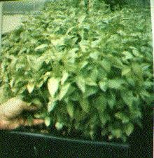

<!DOCTYPE html>
<html>
  <head>
    <meta charset="utf-8">
    <meta name="viewport" content="initial-scale=1, maximum-scale=1, user-scalable=no, width=device-width">
    <title></title>

    <link href="lib/ionic/css/ionic.css" rel="stylesheet">
    <link href="css/style.css" rel="stylesheet">

    <!-- IF using Sass (run gulp sass first), then uncomment below and remove the CSS includes above
    <link href="css/ionic.app.css" rel="stylesheet">
    -->

    <!-- ionic/angularjs js -->
    <script src="lib/ionic/js/ionic.bundle.js"></script>

    <!-- cordova script (this will be a 404 during development) -->
    <script src="cordova.js"></script>

    <!-- your app's js -->
    <script src="js/app.js"></script>
  </head>
  <body ng-app="starter">
    <div>
      <ion-nav-view animation="slide-left-right"></ion-nav-view>
    </div>
    <script id="index.html" type="text/ng-template">
      <ion-pane>
        <ion-header-bar class="bar-stable">
          <h1 class="title">Questions</h1>
        </ion-header-bar>
        <ion-content>
          <div class="card">
            <div class="item item-divider">
              Please specify your location
            </div>
            <div class="item item-text-wrap">
              <div class="list">

              <label class="item item-input item-select">
                <div class="input-label">
                  Country
                </div>
                <select>
                  <option>Iran</option>
                  <option selected>United States</option>
                  <option>England</option>
                </select>
              </label>
              <label class="item item-input item-select">
                <div class="input-label">
                  State
                </div>
                <select>
                  <option>Fars</option>
                  <option selected>Chicago</option>
                  <option>Tehran</option>
                </select>
              </label>
              <label class="item item-input item-select">
                <div class="input-label">
                  City
                </div>
                <select>
                  <option>Shiraz</option>
                  <option selected>Illonois</option>
                  <option>Tehran</option>
                </select>
              </label>

              <div class="item item-text-wrap" align="center">
                <button class="button button-positive">
                  Use GPS to specify location
                </button>
              </div>
            </div>
            </div>
          </div>
          <div class="card">
            <div class="item item-divider">
              How Does Your Room Look Like?
            </div>
            <div class="item item-text-wrap">
              <ion-list>
                <div class="row">

                  <div class="col col-50">
                    <ion-checkbox ng-model="room.circle">
                      <div align="center">
                        <div id="circle"></div>
                      </div>
                    </ion-checkbox>
                  </div>
                  <div class="col col-50">
                    <ion-checkbox ng-model="room.rectangle">
                      <div align="center">
                        <div id="rectangle"></div>
                      </div>
                    </ion-checkbox>
                  </div>
                </div>

              </ion-list>
              <div class="list">
                <label class="item item-input">
                  <input type="text" placeholder="Height">
                </label>
                <label class="item item-input">
                  <input type="text" placeholder="Width">
                </label>
              </div>
            </div>
          </div>
          <div class="card">
            <div class="item item-divider">
              The Budget
            </div>
            <div class="item item-text-wrap">
              <ion-list>
                <ion-radio ng-model="budget.low">Under 100$</ion-radio>
                <ion-radio ng-model="budget.medium">100$ to 1000$</ion-radio>
                <ion-radio ng-model="budget.high">More than 1000$</ion-radio>
              </ion-list>
            </div>
          </div>
          <div class="card">
            <div class="item item-divider">
              The Light Ability
            </div>
            <div class="item item-text-wrap">
              <ion-list>
                <ion-radio ng-model="light.high">High - 12 hours of light daily</ion-radio>
                <ion-radio ng-model="light.normal">Normal - 6 hours of light daily</ion-radio>
                <ion-radio ng-model="light.no">No Sunlight</ion-radio>
              </ion-list>
            </div>
          </div>
          <div class="card">
            <div class="item item-text-wrap" align="center">
              <div class="padding">
                <button class="button button-positive button-block" ng-click="navigateToNext()">
                  Proceed
                </button>
              </div>
            </div>
          </div>
        </ion-content>
      </ion-pane>
    </script>
    <script id="result.html" type="text/ng-template">
      <ion-view>
        <ion-header-bar class="bar-header">
            <h1 class="title">Result</h1>
        </ion-header-bar>
        <ion-content has-header="true" padding="true">
          <div align="center">
          <h1>Aeroponic</h1>
          
          <p><b>Aeroponics</b> is the process of growing <a href="/wiki/Plants" title="Plants" class="mw-redirect">plants</a> in an <a href="/wiki/Air" title="Air" class="mw-redirect">air</a> or <a href="/wiki/Mist" title="Mist">mist</a> environment without the use of <a href="/wiki/Soil" title="Soil">soil</a> or an <a href="/wiki/Construction_aggregate" title="Construction aggregate">aggregate</a> medium (known as <a href="/wiki/Geoponic" title="Geoponic">geoponics</a>). The word "aeroponic" is derived from the <a href="/wiki/Greek_language" title="Greek language">Greek</a> meanings of <i>aero</i>- (air) and <i>ponos</i> (labour). Aeroponic culture differs from both conventional <a href="/wiki/Hydroponics" title="Hydroponics">hydroponics</a>, <a href="/wiki/Aquaponics" title="Aquaponics">aquaponics</a>, and <a href="/wiki/In-vitro" title="In-vitro" class="mw-redirect">in-vitro</a> (<a href="/wiki/Plant_tissue_culture" title="Plant tissue culture">plant tissue culture</a>) growing. Unlike hydroponics, which uses a liquid nutrient solution as a growing medium and essential minerals to sustain plant growth; or aquaponics which uses water and fish waste, aeroponics is conducted without a growing medium. Because water is used in aeroponics to transmit nutrients, it is sometimes considered a type of hydroponics.</p>
<p></p>
          </div>
        </ion-content>
      </ion-view>
    </script>
  </body>
</html>
